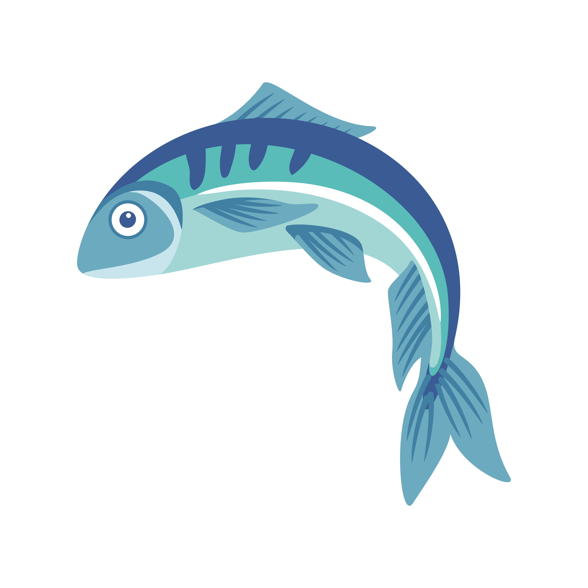
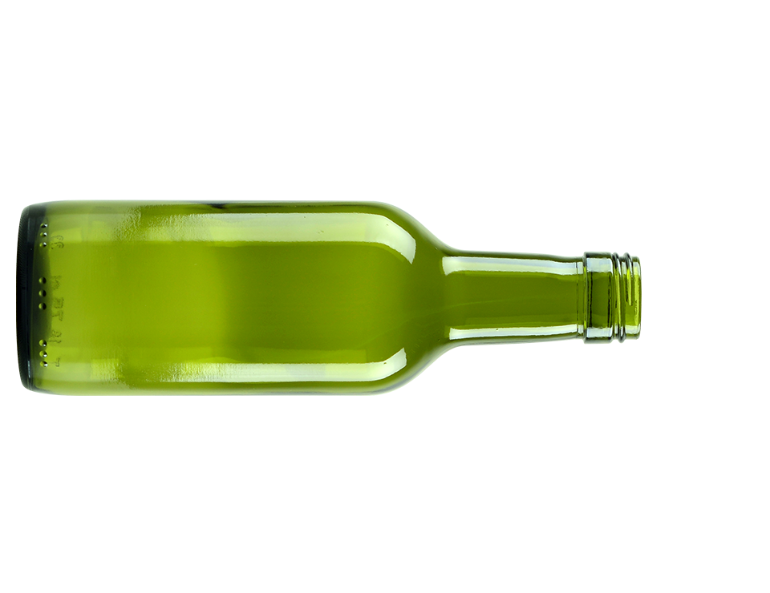
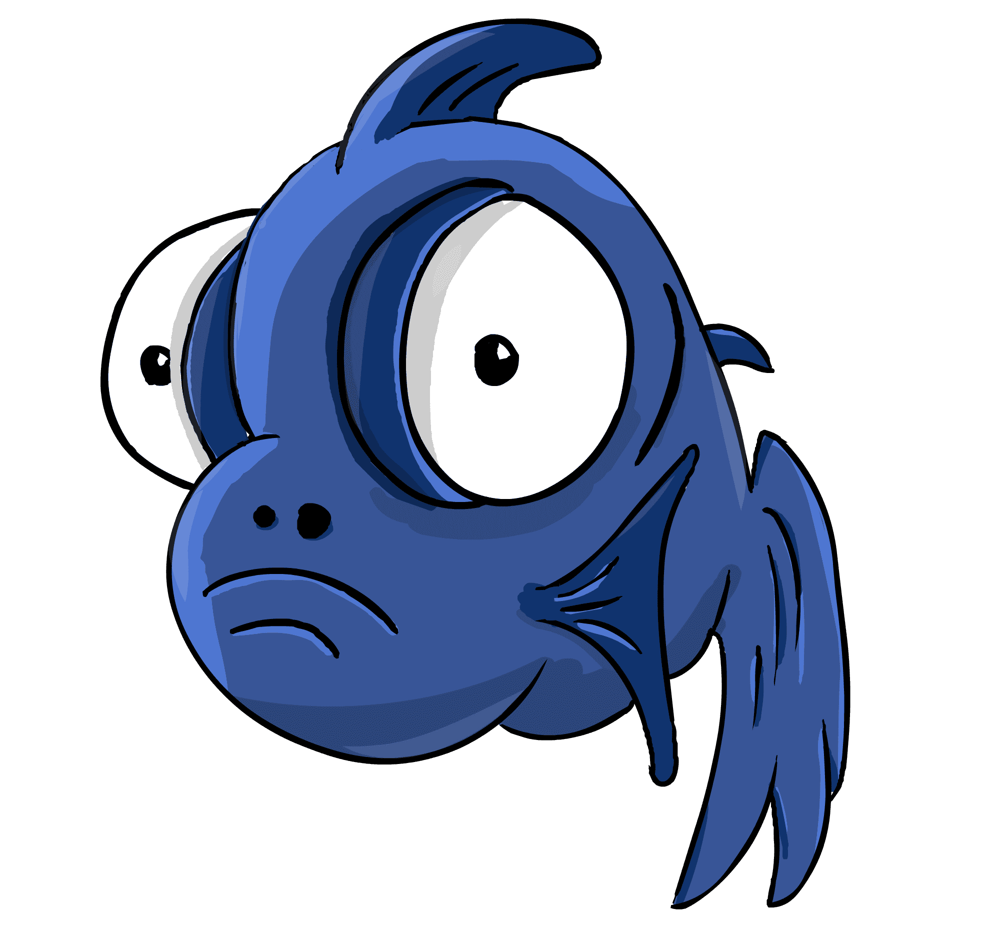

A poluição marinha é uma crise silenciosa que afeta todos nós. Milhões de toneladas de plástico, resíduos químicos e outros poluentes são despejados nos oceanos a cada ano, ameaçando a vida marinha e nossos próprios recursos naturais. Este problema não apenas destrói habitats e mata inúmeras espécies, mas também contamina nossa cadeia alimentar e impacta a saúde humana.

Imagine um futuro onde as águas cristalinas dos oceanos sejam apenas uma lembrança distante. Este cenário pode ser evitado, mas precisamos agir agora. A conscientização é o primeiro passo para a mudança. Cada um de nós pode fazer a diferença através de pequenas ações cotidianas, como reduzir o uso de plástico, reciclar corretamente e apoiar iniciativas de limpeza dos oceanos.

Convido você a se juntar a esta causa vital. Compartilhe informações, participe das nossas campanhas de limpeza comunitaria, e inspire outros a fazer o mesmo. Juntos, podemos proteger e preservar os oceanos para as futuras gerações. Nossa responsabilidade com o meio ambiente começa com a conscientização e a ação. Vamos fazer parte da solução e não do problema. Ajude a manter nossos oceanos limpos e cheios de vida!

Faça sua doação aqui